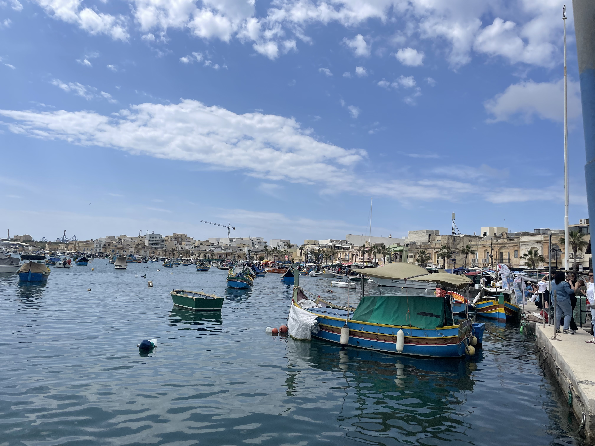
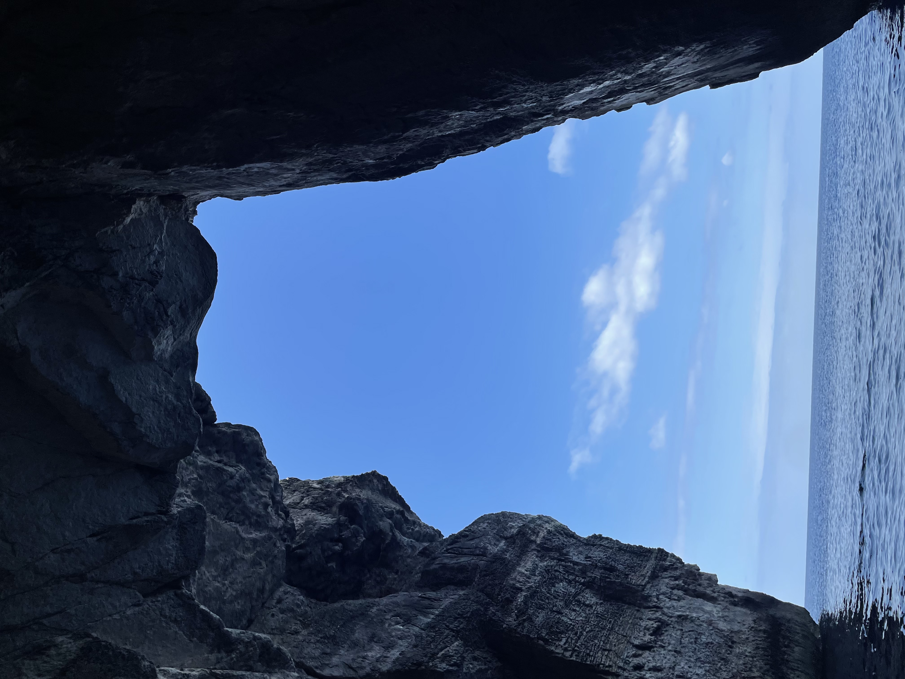
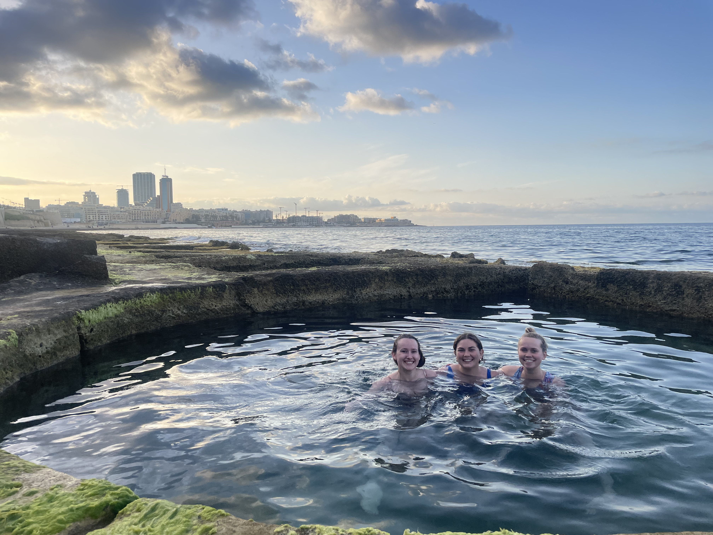
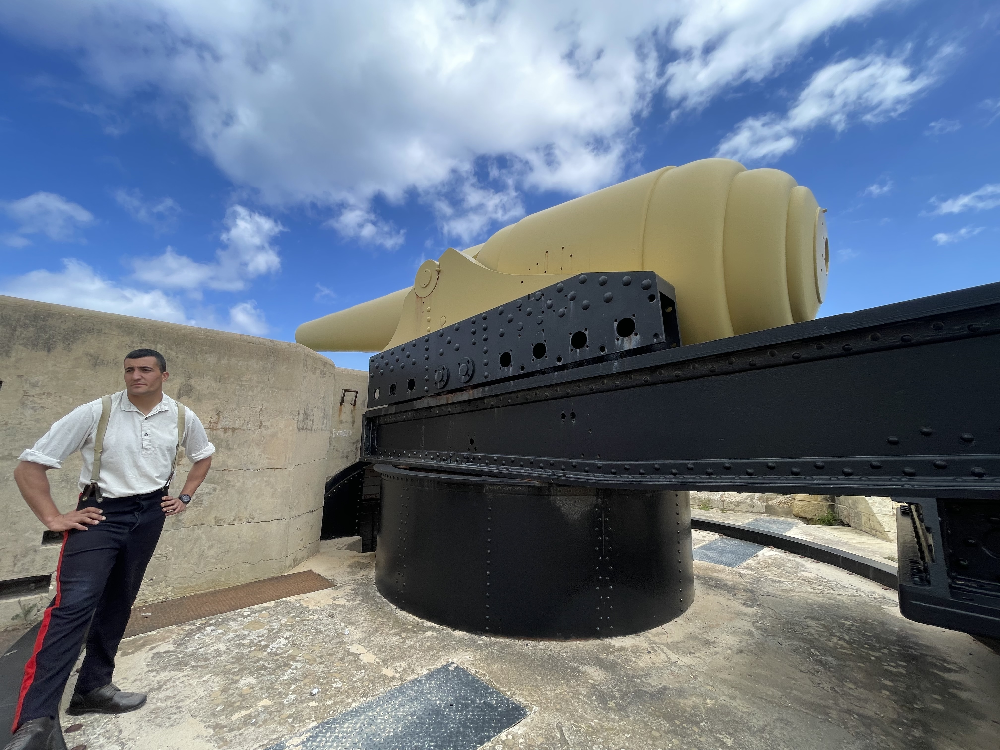

The Fortified City of Malta
Valletta is the capital of a small country southwest of the toe of Italy’s boot, known as Malta. Valletta, Malta is the smallest capital city in the European Union by area. The city is also a UNESCO World Heritage site and was one of the most modern cities of its time when founded in 1566 by the Knights of St. John. The city is well known for the museums, palaces, grand churches, and Baroque landmarks. The layout of narrow streets illustrates some of Europe's artworks, churches, and palaces.
For my abroad experience, I spent about one week exploring the country of Malta, interviewing locals and learning more about the murder of a Maltese journalist and blogger and the historic tradition of hand harvesting salt on the island of Gozo. Here, you can find the journalistic article and photo essay I created while there.



